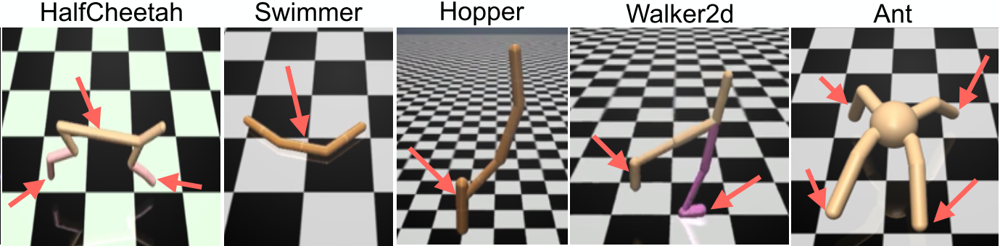

Robust Adversarial Reinforcement Learning
Topics in Machine Learning, Monsoon '17
Course Project
- Binu Jasim T
- Jerin Philip
- Punyaslok Pattnaik
Problem
Algorithm

Example
Inverted Pendulum.
- Protagonist: One 1D force as action.
- Adversary: One 2D force as action.

Example
Other examples
